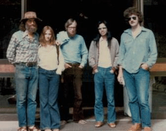

Preface
This manual is definitely not an impartial and balanced review of all of multidimensional scaling (MDS) theory and history. It emphasizes computation, and the mathematics needed for computation. In addition, it is a summary of over 50 years of MDS work by me, either solo or together with my many excellent current or former co-workers and co-authors. It is heavily biased in favor of the smacof formulation of MDS (@deleeuw_C_77, @deleeuw_heiser_C_77, @deleeuw_mair_A_09c, @mair_groenen_deleeuw_A_22), and the corresponding majorization (or MM) algorithms. And, moreover, I am shamelessly squeezing in as many references to my published and unpublished work as possible, with links to the corresponding pdf’s if they are available. Thus this book is also a jumpstation into my bibliography.
I have not organized the book along historical lines because most of the early techniques and results have been either drastically improved or completely abandoned. Nevertheless, some personal historical perspective may be useful. I will put most of it in this preface, so uninterested readers can easily skip it.
I got involved in MDS in 1968 when John van de Geer returned from a visit to Clyde Coombs in Michigan and started the Department of Data Theory in the Division of Social Sciences at Leiden University. I was John’s first hire, although I was still a graduate student at the time.
Remember that Clyde Coombs was chairing the Michigan Mathematical Psychology Program, and he had just published his remarkable book “A Theory of Data” (@coombs_64). The name of the new department in Leiden was taken from the title of that book, and Coombs was one of the first visitors to give a guest lecture there.
This is maybe the place to clear up some possible misunderstandings about the name “Data Theory”. Coombs was mainly interested in a taxonomy of data types, and in pointing out that “data” were not limited to a table or data-frame of objects by variables. In addition, there were also similarity ratings, paired comparisons, and unfolding data. Coombs also emphasized that data were often non-metric, i.e. ordinal or categorical, and that it was possible to analyze these ordinal or categorical relationships directly, without first constructing numerical scales to which classical techniques could be applied. One of the new techniques discussed in @coombs_64 was a ordinal form of MDS, in which not only the data but also the representation of the data in Euclidean space were non-metric.
John van de Geer had just published @vandegeer_67. In that book, and in the subsequent book @vandegeer_71, he developed his unique geometric approach to multivariate analysis. Relationship between variables, and between variables and individuals, were not just discussed using matrix algebra, but were also visualized in diagrams. This was related to the geometric representations in Coombs’ Theory of Data, but it concentrated on numerical data in the form of rectangular matrices of objects by variables.
Looking back it is easy to see that both Van de Geer and Coombs influenced my approach to data analysis. I inherited the emphasis on non-metric data and on visualization. But, from the beginning, I interpreted “Data Theory” as “Data Analysis”, with my emphasis shifting to techniques, loss functions, implementations, algorithms, optimization, computing, and programming. This is of interest because in 2020 my former Department of Statistics at UCLA, together with the Department of Mathematics, started a bachelor’s program in Data Theory, in which “Emphasis is placed on the development and theoretical support of a statistical model or algorithmic approach. Alternatively, students may undertake research on the foundations of data science, studying advanced topics and writing a senior thesis.” This sounds like a nice hybrid of Data Theory and Data Analysis, with a dash of computer science mixed in.
Computing and optimization were in the air in 1968, not so much because of Coombs, but mainly because of Roger Shepard, Joe Kruskal, and Doug Carroll at Bell Labs in Murray Hill. John’s other student Eddie Roskam and I were fascinated by getting numerical representations from ordinal data by minimizing explicit least squares loss functions. Eddie wrote his dissertation in 1968 (@roskam_68). In 1973 I went to Bell Labs for a year, and Eddie went to Michigan around the same time to work with Jim Lingoes, resulting in @lingoes_roskam_73.
My first semi-publication was @deleeuw_R_68g, quickly followed by a long sequence of other, admittedly rambling, internal reports. Despite this very informal form of publication the sheer volume of them got the attention of Joe Kruskal and Doug Carroll, and I was invited to spend the academic year 1973-1974 at Bell Laboratories. That visit somewhat modified my cavalier approach to publication, but I did not become half-serious in that respect until meeting with Forrest Young and Yoshio Takane at the August 1975 US-Japan seminar on MDS in La Jolla. Together we used the alternating least squares approach to algorithm construction that I had developed since 1968 into a quite formidable five-year publication machine, with at its zenith @takane_young_deleeuw_A_77.
In La Jolla I gave the first presentation of the majorization method for MDS, later known as smacof, with the first formal convergence proof. The canonical account of smacof was published in a conference paper (@deleeuw_C_77). Again I did not bother to get the results into a journal or into some other more effective form of publication. The basic theory for what became known as smacof was also presented around the same time in another book chapter @deleeuw_heiser_C_77.
In 1978 I was invited to the Fifth International Symposium on Multivariate Analysis in Pittsburgh to present what eventually became @deleeuw_heiser_C_80. There I met Nan Laird, one of the authors of the basic paper on the EM algorithm (@dempster_laird_rubin_77). I remember enthusiastically telling her on the conference bus that EM and smacof were both special case of the general majorization approach to algorithm construction, which was consequently born around the same time. But that is a story for a companion volume, which currently only exists in a very preliminary stage (https://github.com/deleeuw/bras).
My 1973 PhD thesis (@deleeuw_B_73, reprinted as @deleeuw_B_84) was actually my second attempt at a dissertation. I had to get a PhD, any PhD, before going to Bell Labs, because of the difference between the Dutch and American academic title and reward systems. I started writing a dissertation on MDS, in the spirit of what later became @deleeuw_heiser_C_82. But halfway through I lost interest and got impatient, and I decided to switch to nonlinear multivariate analysis. This second attempt did produced a finished dissertation (@deleeuw_B_73), which grew over time, with the help of multitudes, into @gifi_B_90. But that again is a different history, which I will tell some other time in yet another companion volume (https://github.com/deleeuw/gifi). For a long time I did not do much work on MDS, until the arrival of Patrick Mair and the R language led to a resurgence of my interest, and ultimately to @deleeuw_mair_A_09c and @mair_groenen_deleeuw_A_22.
I consider this MDS book to be a summary and extension of the basic papers @deleeuw_C_77, @deleeuw_heiser_C_77, @deleeuw_heiser_C_80, @deleeuw_heiser_C_82, and @deleeuw_A_88b, all written 30-40 years ago. Footprints in the sands of time. It can also be seen as an elaboration of the more mathematical and computational sections of the excellent and comprehensive textbook of @borg_groenen_05. That book has much more information about the origins, the data, and the applications of MDS, as well as on the interpretation of MDS solutions. In this book I concentrate almost exclusively on the mathematical, computational, and programming aspects of MDS.
For those who cannot get enough of me, there is a data base of my published and unpublished reports and papers since 1965, with links to pdf’s, at https://jansweb.netlify.app/publication/.
There are many, many people I have to thank for my scientific education. Sixty years is a long time, and consequently many excellent teachers and researchers have crossed my path. I will gratefully mention the academics who had a major influence on my work and who are not with us any more, since I will join them in the not too distant future: Louis Guttman (died 1987), Clyde Coombs (died 1988), Warren Torgerson (died 1999), Forrest Young (died 2006), John van de Geer (died 2008), Joe Kruskal (died 2010), Doug Carroll (died 2011), and Rod McDonald (died 2012).
I will also use this preface to thank Rstudio, in particular J.J. Allaire, Hadley Wickham, and Yihui Xi, for their contributions to the R universe, and for their promotion of open source software and open access publications. Not too long ago I was an ardent LaTeX user, firmly convinced I would never use anything else again in my lifetime. In the same way that I was convinced before that I would never use anything besides, in that order, FORTRAN, PL/I, APL, and (X)Lisp. And PHP/Apache/MySQL. But I lived too long. And then, in my dotage, lo and behold, R, Rstudio, (R)Markdown, Quarto, ggplot, bookdown, blogdown, Git, Github, and Netlify came along.
In this manual we study the smacof family of Multidimensional Scaling (MDS) techniques. In MDS the data consist of some type of information about the dissimilarities between a pairs of objects. These objects can be anything: individuals, variables, colors, locations, chemicals, molecules, works of Plato, political parties, Morse code signals, and so on. The dissimilarities can be approximate or imprecise distances, dissimilarity judgments, import/export tables, sociometric choices, and so on. They generally are distance-like, but we do not expect them to satisfy the triangle inequality, and in general not even non-negativity and symmetry. Similarities, such as confusion probabilities, correlations, or preferences, are always converted in some way or another to dissimilarities before they can serve as data for MDS.
The information we have about these dissimilarities can be numerical, ordinal, or categorical. Thus we may have the actual values of some or all of the dissimilarities, we may know their rank order, or we may have a classification of them into a small number of qualitative bins.
Let’s formalize this, and introduce some notation at the same time. The set of ojects is \(\mathfrak{O}\). For example, it can be the set of all cities with more than 10,000 inhabitants. In our MDS analysis we only use \(O:=(o_1,\cdots,o_n)\), an n-tuple (i.e. a finite sequence) of \(n\) different elements of \(\mathfrak{O}\), for example \(n\) capital cities selected from \(\mathfrak{O}\). If you want to, you can call \(O\) a sample from \(\mathfrak{O}\). It is entirely possible, however, that \(\mathfrak{O}\) has only \(n\) elements, in which case \(O\) is just an permutation of the elements of \(\mathfrak{O}\).
A dissimilarity is a function \(\delta\) on all pairs of objects, with values in a set \(\mathfrak{D}\). It can be, for example, the time in seconds for an airline flight from city one to city two. Thus \(\delta:\mathfrak{O}\otimes\mathfrak{O}\Rightarrow\mathfrak{D}\). A dissimilaritry is numerical if \(\mathfrak{D}\) is subset of real line, it is ordinal if \(\mathfrak{D}\) is a partially ordered set, and it is nominal if \(\mathfrak{D}\) is neither. Or a dissimilarty is nominal if \(\mathfrak{D}\) is any set, and we choose to ignore the ordinal and numerical information if it is there. No matter what \(\mathfrak{D}\) is, we suppose it always has the element \(\mathit{NA}\) to indicate missing dissimilarities. Cities may not have airports, for example, or we just don’t have the information about the airline distances. Define \(\delta_{ij}:=\delta(o_i,o_j)\) and \(\Delta:=\delta(O\times O)\). We can think of \(\Delta\) and an \(n\times n\) matrix with elements in \(\mathfrak{D}\).
MDS techniques map the objects \(o_i\) into points \(x_i\) in some metric space \(\langle\mathfrak{X},d\rangle\) in such a way that the distances between pairs of points approximate the dissimilarities of the corresponding pairs of objects. Thus we want to find a map \(x:\mathfrak{O}\rightarrow\mathfrak{X}\) that produces an n-tuple \(X=(x_1,\cdots,x_n)\) of elements of \(\mathfrak{X}\), where \(x_i:=x(o_i)\). Also define \(d_{ij}:=d(x_i,x_j)\) and \(D(X):=d(X\times X\). Unlike the dissimilarities the \(d_{ij}\) are always numerical, because distances are. So MDS finds \(X\) such that \(D(X)\approx\Delta\).
For numerical dissimilarities it is clear what “approximation” means, we simply want the distances and the corresponding dissimilarities to be numerically close. Because there are generally many dissimilarities and distances a combined measure of closeness can still be defined in many different ways. For ordinal and nominal dissimilarities the notion of approximation is less clear, and we have to develop more specialized techniques to measure how well the distances fit the dissimilarities.